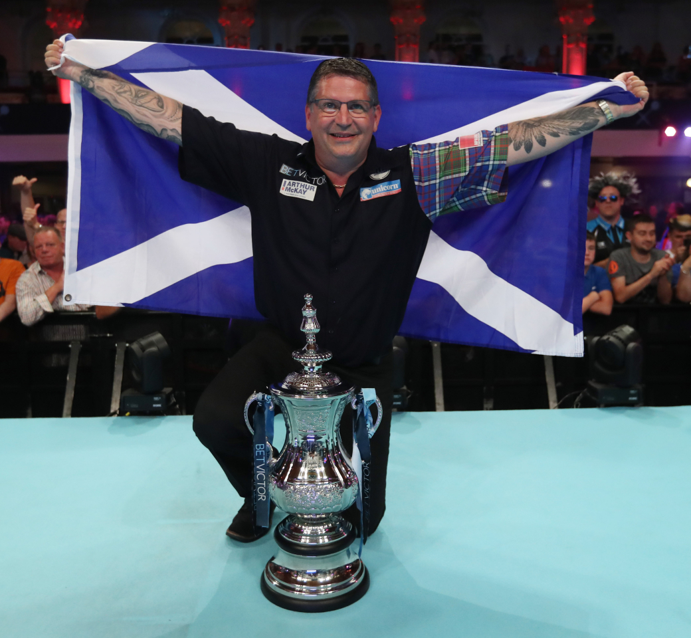

| Gary Anderson |
|---|
| Nickname | Flying Scotsman |
| Home Town | Burnham-on-Sea |
| Walk-on song | Jump Around - House of Pain |
| Darts Used | Unicorn 23g |
| Rank | 12 |
| Televised titles | 15 |
| Non-Televised PDC titles | 38 |
| Televised Nine-Dart Finishes | 3 |
Scottish legend Anderson joined an elite group of players to win back-to-back
World Championship titles with his successes in 2015 and 2016 at Alexandra Palace, cementing his name amongst the most successful players in the history of the sport.